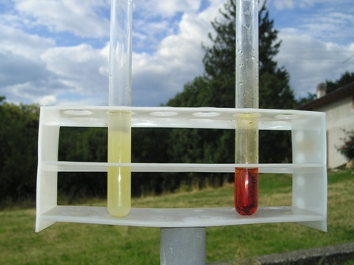
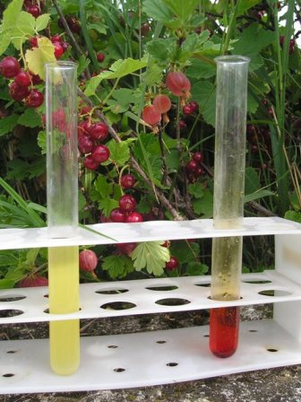

La reazione di L.Stahre è un metodo analitico per la rilevazione dei citrati.
L'acido citrico, di cui qui a sinistra si vede l'immagine, si trova oltre che negli agrumi nel succo di molti frutti.
E' un acido tribasico, solubile nell'acqua, con il sapore acidulo caratteristico che tutti conosciamo. I citrati alcalini ed i citrati dei metalli pesanti formano complessi facilmente solubili; poco solubili o insolubili sono invece i citrati metallici da soli.
Ho provato il vecchio test di L.Stahre (1895), interessante anche per le reazioni su cui si basa.
Se condotto bene, il test è specifico e molto sensibile.
Ecco come procedere:
- si aggiunge alla sol. di un citrato (nel mio caso una piccola quantità di citrato di sodio in 10 ml di acqua) qualche goccia di H2SO4 diluito e altrettante di KMnO4 N/10 e si scalda dolcemente per favorire l'ossidazione ma senza oltrepassare i 30-40°.
La soluzione imbrunisce per formazione di MnO2, mentre l'ac. citrico si ossida come vedremo poi.
Con un paio di gocce di ossalato ammonico e 1 ml di H2SO4 diluito la soluzione torna perfettamente limpida.
Aggiungendo ora qualche goccia di acqua di bromo, si ha intorbidamento per la formazione di un precipitato bianco cristallino di pentabromoacetone CBr3-CO-CHBr2
Il funzionamento della reazione si basa sulla ossidazione dell'acido citrico con KMnO4 ad acido acetondicarbossilico (perde un C e va via CO2), il quale con bromo viene alogenato a pentabromoacetone (e perde altri due C con CO2).
Poichè a caldo l'ac. acetondicarbossilico si decompone subito in acetone e CO2, e l'acetone non è facilmente bromurabile, occorre scaldare appena il necessario durante l'ossidazione, altrimenti la reaz. è meno sensibile.
Ecco le reazioni:
la prima è l'ossidazione dell'acido citrico da parte del permanganato
COOH-CH2-C(OH)(COOH)-CH2-COOH + O -->
--> CO2 + H2O + COOH-CH2-CO-CH2-COOH acido acetondicarbossilico
la seconda è la bromurazione dell'acido acetondicarbossilico
COOH-CH2-CO-CH2-COOH + 5 Br2 --> 2 CO2 + 5 HBr + CHBr2-CO-CBr3
In sostituzione dell'acqua di bromo, si può usare qualche cristallo di bromuro di potassio, il quale con H2SO4 e KMnO4 fornisce la necessaria quantità di bromo.

10 KBr + 2 KMnO4 + 8 H2SO4 --> 5 Br2 + 6 K2SO4 + 2 MnSO4 + 8 H2O
Nella foto si vede a sinistra il prec. bianco (leggermente giallino perchè ho abbondato con l'alogeno) e a destra l'acqua di bromo, della quale sono state usate un po' di gocce.

Lo sfondo delle foto è in tema stagionale estivo ed il luogo agreste montano: una pianticella di ribes rosso, qualche acino di uva spina quasi matura, prati, abeti e nuvole... ingredienti ideali per meditazioni chimiche e relative riposanti esperienze.
2 commenti